Gimmicks and Stage Effects
Intro
Summary for the gimmicks and stage effects in the game.
Some gimmicks can have full page explanations, but will not go into that
level of detail here.
Corresponding pages will be created on the Eng wiki for deeper dives.
The gimmicks here are based off the in game help section.
Main Gimmicks
- 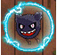 gb - Gravity Barrier - slow down when touched
- 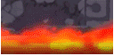 dw - Damage Wall - Inflict elemental damage when touched
- 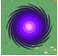 warp - Warp - Warps your unit to another random warp. Random warps will spit out unit in random direction.
- 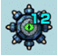 mines - Mines - Mine explode when touched and inflict damage to all nearby units. Will also explode after turn reaches 0.
- 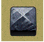 blocks - Blocks - Blocks your movement similar to a wall.
- 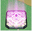 magic_circle - Magic Circle - When touched and ON, turn character into chick state. Turns off after touched. Chick state cannot use ss and reduced (33%) direct attack and bump combo.
- 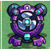 wind - Wind - Displaces units or drags them towards the wind source
- 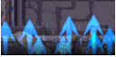 sdw - Slowdown Wall - Greatly slows down a unit or stops it completely when touched.
-
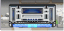
 tw - Teleport Wall - When touching wall will transport your unit to
corresponding circular teleport base.
tw - Teleport Wall - When touching wall will transport your unit to
corresponding circular teleport base.
-
 sdf - Slowdown Floor - Greatly slows down a unit when touched.
sdf - Slowdown Floor - Greatly slows down a unit when touched.
Panel Gimmicks
- 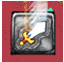 power_up_panel - Power Up Panel - Increases attack power when touched (once per panel, attack multiplier increases depending on number of panels touched).
- 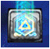 wp_power_up_panel - Weak Point Power Up Panel - Increases weak point multiplier when touched (once per panel, weak point multiplier increases depending on number of panels touched).
- 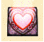 healing_panel - Healing Panel - Heals when touched.
- 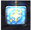 cleansing_panel - Cleansing Panel - Cleanse status effects (once per panel)
- 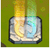 sling_change_panel - Sling Type Change Panel - Changes sling type (bounce/pierce; once per panel)
- 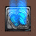 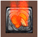 sling_speed_up_panel - Sling Type Speed Up Panel - Speed up with touched if matching sling type. Red for bounce, and blue for pierce. If not matching, greatly slows down. (once per panel)
- 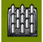 needle - Needle Panel - Inflicts damage when touched.
-
 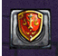
item_panel - Item Generation Panel - Item generated on panel every
turn, if item acquired, another item will be generated.
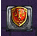
item_panel - Item Generation Panel - Item generated on panel every
turn, if item acquired, another item will be generated.
-
wall_change_panel - Wall Change Panel - Effect occurs according to the
count number. Touching wall advances count (once per wall), up to a
maximum of 3. Panel does not reset until touched.
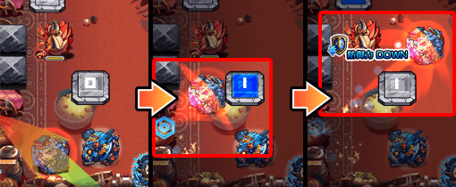 - 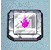 launcher_panel - Launcher Panel - Moves character to last touched launcher panel. Shoot simultaneously with the next character. (Multiple hits on same panel have no effect)
- 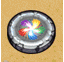 element_area_panel - Elemental Area Panel - When touched, an elemental area is deployed around it. When touching another panel, elemental area moves to that panel.
- 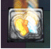 speed_up_panel - Speed Up Panel - Speed up when touched (once per panel).
- 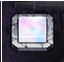 invisibility_panel - Invisibility Panel - Touch to change invisibility state of target enemy (once per panel)
-
power_switch_panel - Power Switch - Touch switch to change level by
one. If you set all switches on screen to same level, attack power of
all allies increase. If all switches set to level 2 (red), switches
will stay at level 2 for the turn then reset.
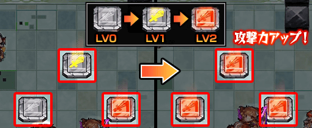 - 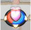 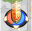 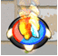 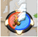 rotating_panel - Rotating Panel - Panel rotates and stops when you "grab" shooting arrow. Touching red part causes good effect, and blue part cause bad effect. Panel types are heart (heal), shield (defenses), boot (speed), sword (attack). (Once per panel).
-
range_boost_bomb_panel - Range Boost Bomb Panel - Bomb is generated on
the panel and placed on first enemy touched. Power increases depending
on distance traveled between obtaining the bomb and placing it.
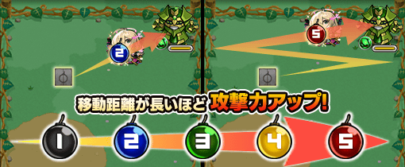
Wall Gimmicks
- 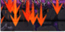 speed_up_wall - Speed Up Wall - Speed up when touched (once per wall)
- 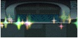 healing_wall - Healing Wall - Heal when touched
-
power_up_wall - Power Up Wall - Touching power up wall will increase
attack power of next direct attack (once per wall, attack multiplier
increases depending on walls touched, walls and attack increase resets
after direct attack
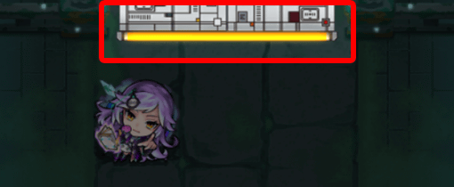 - 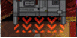 vector_wall - Vector Wall - Touch wall to increase speed and change direction (once per wall).
-
count_boost_wall - Count Boost Wall - Attack power increases depending
on the number of times wall is touched. Each wall has a limit. Attack
power resets when the turn ends.
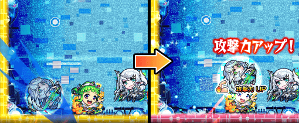 -
piercing_wall - Piercing Wall - Touch piercing wall to create piercing
spear (one spear per wall). Each time character touches another
piercing wall, spear attacks and length increases. Spear damage is
affected by crest, super balance bias, attack up, base ability
slayers. Spear damage is not affected by gauge slayers, super null
damage wall, super null warp.
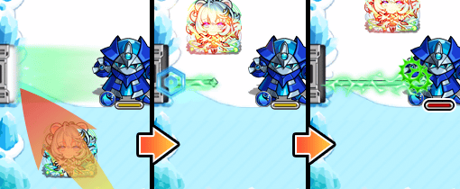 -
power_change_wall - Power Change Wall - Color changes by one level
each time you touch wall (once per wall). Attack power of all allies
changes depending on power level (level 1 is blue, level 2 is yellow,
level 3 is red).
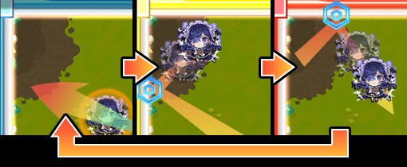 -
hit_charge_wall - Hit Charge Wall - Each time you touch the wall,
field around the character will expand and the character's attack
power will increase (once per wall, up to a maximum of four). When you
touch an enemy, it will reset the walls, field and attack power.
Enemies within the field will receive damage at regular intervals.
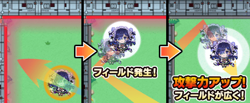 -
through_change_wall - Through Change Wall - Touch it to slip through
the wall and emerge from the opposite wall. Touching a wall that
cannot be slipped through will switch the wall that can be slipped
through in a clockwise direction once for each wall.
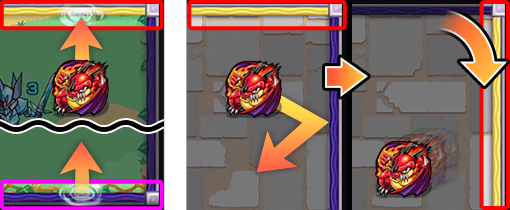
Firing Gimmicks
- 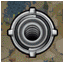 vision_base - Vision Base - When touches, launches a character clone from another vision base to attack
-
 cannon_base - Cannon Base - Fires an attack at nearby enemy when
touched. Touching another cannon base will allow you to fire again.
cannon_base - Cannon Base - Fires an attack at nearby enemy when
touched. Touching another cannon base will allow you to fire again.
-
rotating_laser_base - Rotating Laser Base - Laser base rotates until
touched, then it stops. Fires laser after character stops moving.
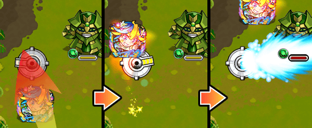 - 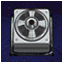 cannon_block - Cannon Block - When touched fires an attack in characters direction of travel
- 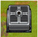 chase_beam_block - Chase Beam Unit - Fires an attack that follows the character when touched
- 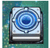 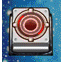 ball_block - Ball Block - Hit block to shoot a ball in same direction. Blue blocks shoot pierce projectile, red block for bounce. Once per turn.
Enemy Gimmicks
- 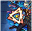 wp_multiplier_up - Weak Point Multiplier Up - increase damage multiplier of weak points
- 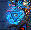 wp_multiplier_down - Weak Point Multiplier Down - reduces damage multiplier of weak points
-
wp_seal - Weak point Seal - Touching a sealed weakpoint will reveal a
weak point. If an enemy has multiple seals, only the first wp touched
will appear.
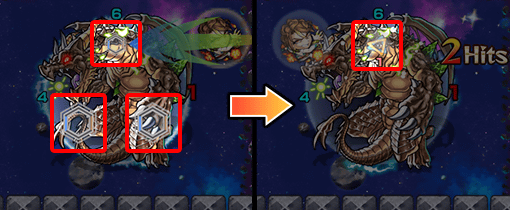 -
wp_movement - Weakpoint Movement - When you touch weak point, the weak
point moves to another position
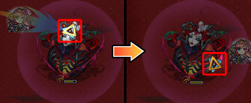 - 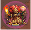 laser_barrier - Laser Barrier - deployed around the enemy to block laser attacks.
- 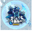 attribute_laser_barrier - Attribute Laser Barrier - Deployed around the enemy, and blocks laser attacks other than those with advantageous attributes.
- damage_barrier - Damage Barrier - Deployed around enemy, blocking attacks. Breaks after a certain amount of damage dealt
-
hit_barrier - Hit Barrier - Takes only 1 damage. Breaks after a
certain number of touches
- direction_guard - Direction Guard - A guard deployed on the enemy in conjunction with the direction of the pulled arrow. Damage cannot be inflicted from the guard side.
- direction_attack - Direction Attack - Enemy attacks in conjunction with the direction of the pulled arrow.
-
counterattack_mode - Counter Attack Mode - When you deal damage to an
enemy, some effect occurs.
-
sling_type_counter_mode - Sling Type Counter Mode - Enemy has circle
with orange and blue sections. Enemy counter mode triggers only if
hitting orange part with bounce, or blue part with pierce.

- hp_absorption - HP Absorption - Absorbs and recovers enemy HP for a certain number of turns
- invisibility - Invisibility - Targetted enemy cannot be touched and cannot take damage.
- delayed - Delayed - Enemy attack is delayed and enters a delayed state. While in delayed state, cannot stack more delays, must wait until delay state is removed.
- haste - Haste - Enemy attack turn number reduced.
- rage - Rage - Increases attack power, but makes it easier to deal damage. When certain amount of damage is dealt, the rage level increases. When the attack ends, the rage level decreases. The number of rage levels varies depending on the type of enemy, up to a maximum of three. It is removed by status abnormalities such as paralysis or sleep.
-
multi_contact_def_down - Multiple Contact Defense Down - Enemy defense
goes down when you hit target enemy. Circle with number on enemy
indicates number of hits. The down factor increases depending on the
number of hits.
- defense_downfield - Defense Downfield - Deployed around the enemy. Reduces the defense of characters within range.
Damage Related Gimmicks
- skull - Skull - Defeating an enemy with a skull mark will have an effect. However, if you defeat them while stunned, paralyzed, or asleep, no effect will occur.
- cross_skull - Cross skull - Defeat all enemies on the screen with cross skull will triggers an effect. However, if you defeat them while stunned, paralyzed, or asleep, no effect will occur.
-
color_skull - color_skull - Defeating an enemy with a color skull mark
will cause an effect. The color changes each time you touch it, and
the effect varies depending on the color at the time of defeat.
However, if you defeat them while stunned, paralyzed, or asleep, no
effect will occur.
- lightning_sensor - Lightning Sensor - When touched, character will be attacked after stopping.
- counter_sensor - Counter Sensor - Touching produces an effect
-
damage_smog - Damage Smog - Takes damage on contact. Disappears after
a turn or on contact
- pillar_of_fire - Pillar Of Fire - Count down by one each turn, and when it reaches 0, a pillar of fire occurs dealing damage to nearby units.
- pillar_of_blue_fire - Pillar of Blue Fire - Count down by one each turn, and when it reaches 0, a pillar of blue fire occurs dealing damage to nearby units.
- healing_balloon - Healing Balloon - When touched you pick up and hold balloon. When you touch an ally or enemy, consume a balloon to restore the targets HP. You can hold up to 4.
- fire_floor - Fire Floor - Will inflict damage when touched. Characters with fire eater ability will disable the fire floor and recover HP.
- crescent_attack - Crescent Attack - Attacks that change their power, range, etc. every time they are activated.
- attack_skip_gauge - Attack Skip Gauge - Attacks that do not activate if the gauge is set to 0. Reduce the gauge by dealing damage to the enemy.
-
photon_charge_attack - Photon Charge Attack - An attack that activates
when the number is 0. The number decreases by touching it while having
a photon.
-
glow_bomb - Glow Bomb - Damage taken increases the longer a glow bomb
stays on stage. Increase is from blue, to yellow, to red.
Other Gimmicks
- teleport_tunnel - Teleport Tunnel - Teleport tunnels in same colored pairs, when you touch the tunnel it moves you to the other same color tunnel. (Once per turn)
-
char_teleport_tunnel - Character Teleport Tunnel - Teleport tunnel and
an allied character in same colored pairs, when you enter the tunnel
it will move you to corresponding allied character. (Once per turn)
-
hit_box - Hit Box - Box that will break after a certain number of
hits.
-
energy_container - Energy Container - When you hit energy container
you will pick up and hold energy. When you hit an enemy, it consumes
one energy. You may hold 4 energy. The number on each energy container
indicates how much energy can be picked up.
-
vanish_box - Vanish Box - Box will block your units similar to blocks.
The last hit vanish box will disappear in the next turn. Last hit box
is marked red, but this mark does not work if touching same box more
than once.
-
 speed_floor - Speed Floor - When touched, changes direction and speed.
(Once per turn)
speed_floor - Speed Floor - When touched, changes direction and speed.
(Once per turn)
-
sling_type_box - Sling Type Box - Boxes colored blue or red. Blue
boxes will block pierce units, but allow bounce units through.
Likewise, red boxes block bounce, allows pierce through. When box is
touched (yellow indicator turns off), it changes color next turn.